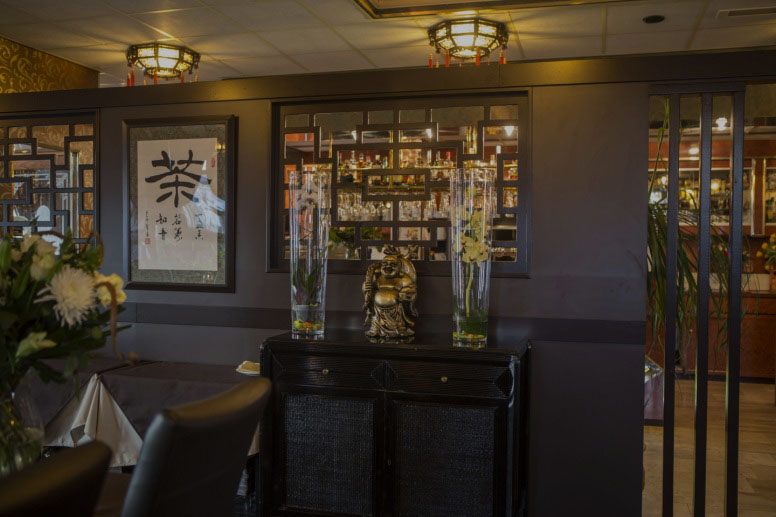
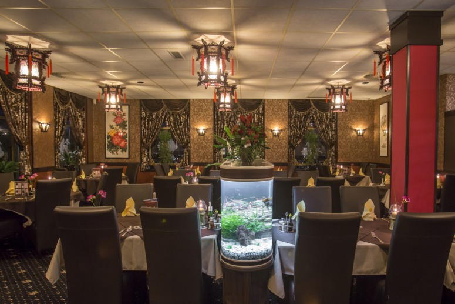

Chinees maandmenu
Babi Pangang, Foe Yong Hai, Koe Loe Kai, saté, mini loempia's en witte rijst
26,50
Chinees en Indisch restaurant in Julianadorp
Rustig genieten van traditionele Chinese en Indische gerechten, in het restaurant of thuis.
Dinsdag t/m zondag, ook op feestdagen 16.00 tot 21.00
Voor 2 personen, ook om af te halen
Babi Pangang, Foe Yong Hai, Koe Loe Kai, saté, mini loempia's en witte rijst
26,50
Daging Roedjak, Babi Ketjap, Sajor Lodeh, saté, mini loempia's en witte rijst
26,50
Bij De Chinese Pagode kunt u rustig genieten van een traditioneel Chinees gerecht in een geweldige ambiance.
Wij werken niet met buffetten (behalve bij feesten en partijen), dus er lopen niet steeds gasten langs uw tafel. Zo geniet u optimaal van de echte Chinese keuken.
Dagelijks bereiden wij met toewijding en verse ingrediënten de heerlijkste traditionele Chinese gerechten. Op onze kaart staan ook gerechten die u niet zo snel in een ander Chinees restaurant vindt. Laat u gerust eens verrassen.

De kaart van het restaurant. Gerechten zijn met witte rijst, tenzij anders vermeld.
deeg gevuld met vlees
soep met div. champignons
soep met visballen en garnalen
rijk gevulde Chinese pikante goulashsoep
garnalen in rijstdeeg
gehakt in deeg
gebakken deeg gevuld met vlees
4 stuks
2 stuks
loempia van sojadeegvel
3 kipstokjes
div. vlees, garnalen en Chinese babi pangang
kerrie, vlees en garnalen
div. vlees, garnalen en Chinese babi pangang
div. vlees, garnalen en Chinese babi pangang
varkenshaas, div. groenten, scherpe Sechuan saus
varkenshaas in Yu-Sin saus
geroosterd mager vlees
pikante zwarte bonensaus
Chinese babi pangang in zoetzure saus
met div. groenten
met div. groenten
met div. groenten
met div. groenten
geroosterde kipfilet met pikante saus
zoetzure saus
gepaneerde kipblokjes met zoetzure saus
zoetzure saus
met div. groenten
met div. groenten
met div. groenten
met div. groenten
met lente-uitjes en peper in sojasaus
scherpe kipfilet
Allergieën of gevoeligheden? Meld het van tevoren aan onze medewerkers.

Alles dagelijks vers bereid. Bestel online of bel ons, en haal uw bestelling op of laat hem bezorgen.
131 gerechten, met de nummers van onze afhaalkaart. Nasi of bami in plaats van witte rijst: 1,50 extra. Mihoen of Chinese bami: 3,00 extra.

Voor feesten en partijen hebben wij een aparte ruimte, geschikt voor maximaal 65 personen. Een buffet is dan ook mogelijk.
Vanaf 15 personen verzorgen wij ook uw catering voor bedrijfsfeesten en andere speciale gelegenheden, op locatie.
Meer weten? Kom langs, bel 0223 - 64 23 59 of mail restaurant@chinesepagode.nl.
Wij verwelkomen u graag in ons restaurant. Bel ons, of stuur een bericht met het formulier.
0223 - 64 23 59Dinsdag t/m zondag en feestdagen, 16.00 tot 21.00
0223 - 64 23 59
restaurant@chinesepagode.nl
| Maandag | gesloten |
|---|---|
| Dinsdag t/m zondag | 16.00 tot 21.00 |
| Feestdagen | 16.00 tot 21.00 |
Parkeren kan bij het restaurant.